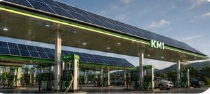

Impacto y Energía
Cada paradero KM1 se diseña como un pequeño sistema energético: genera con el sol, almacena en baterías y alimenta la carga de vehículos y la operación del sitio.
Parámetros de diseño de referencia
Estos valores son el punto de partida de ingeniería para cada sede. No son capacidades instaladas ni resultados medidos.
Generación fotovoltaica de hasta 150 kWp sobre islas y estacionamiento.
Sistema de baterías para gestionar picos y dar respaldo.
Canalizaciones y capacidad eléctrica preparadas para carga rápida y ultrarrápida.
Control de demanda y continuidad operativa ante variaciones de la red.
Recuperación de agua para autolavado como objetivo de ingeniería.
Las capacidades finales dependen de cada ubicación, factibilidad de red, permisos y diseño ejecutivo.
Cómo fluye la energía
Impacto
Lugares iluminados y vigilados para detenerse a descansar.
Puntos de carga en carretera donde hoy faltan.
Espacio de venta para productores y proveedores de la región.
Equipos locales capacitados con estándares de hospitalidad KM1.